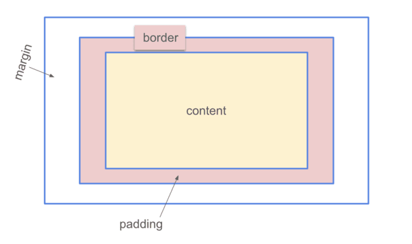

Structure, Phrasing, and Display
Structural elements are elements like paragraphs or divs, which start on a new line and take up the full width available.
Inline elements are not on new lines, and only take up as much width as they need. Examples of possible displays are flex or
block, which are structural elements, and they allow you to organize items in these boxes and style them as desired.
Box Model
The box model is a way of organizing and targeting content on a webpage by creating and styling these individual boxes.
Width refers to the width of the content, padding refers to the space between the content and the margin, margin refers to
the area between the box and the edge of the page, and border refers to the edge of the box. Box-sizing dictates whether
the border and padding are included in the total width ad height.

Background Images
The main difference between an image included through the image tag and an image loaded as a background image is that the
image in the image tag is included in the html, while the background image is through CSS. This means that if the CSS doesn't
load, the background image won't load either, while the image added through the img tag in the html will.